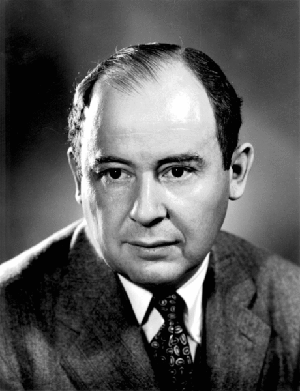

Functional PHP
Presented by Larry Garfield (@Crell)
Warning, hard core geek action
Please pardon the nerd
But first a little history
Von Neumann Architecture

- John Von Neumann, 1903-1957
- Mathematician, Physicist, all-around genius
- Set theory, Operator theory, quantum theory, nuclear physics...
- One of those ridiculously smart people who don't get enough credit for how much they change the world.
Von Neumann Architecture

Programs are data, not hardware
Von Neumann Architecture
- A program is just data: "Stored Program" concept
- A program is a series of steps
- Steps execute in linear sequence
- Steps alter memory registers
- Steps can alter the next step
Imperative Programming
- Imperative "mood"
- Series of precise commands
- State: values that get changed over time by commands
- The purpose of commands is to alter state
This is what all modern hardware does
Imperative Programming is following a recipe for a cake
Procedural Programming
- Imperative Programming: Evolved
- Procedure = subroutine = reusable series of commands
- Structured Programming: High-level abstractions
if-thenwhilefor
Var MyList [5, 7, 2, 9, 2]
Var Biggest
Procedure FindBiggest
For MyList As Item
If Item > Biggest Then
Biggest = Item
End If
End For
Return
End Procedure
Call FindBiggest
Print Biggest
Imperative Programming is following a recipe for a cake
Procedural Programming is singing a song with a refrain
Declarative programming
Declarative Programming defines
what a program should accomplish.
John Backus
- John Backus, 1924-2007
- Invented FORTRAN, 1953
- As penance...
- Developed Backus-Naur Form (BNF)
- Co-developed Algol
- Function-level Programming (FP), 1977
"Can Programming Be Liberated From the von Neumann Style? A Functional Style and its Algebra of Programs"
Functional programming
Declare your algorithm
The compiler optimizes for you
Functional programming
- Pure functions
- Higher-order functions / First-class functions
- Immutable variables
So what?

This is PHP!
Functional languages enforce what is
simply "good code" in other languages